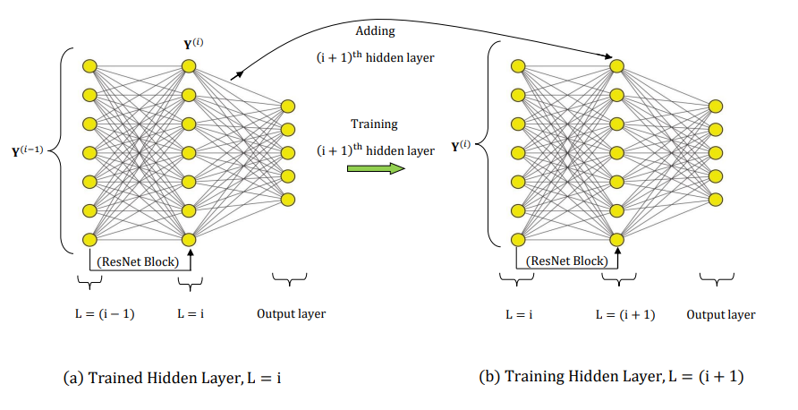
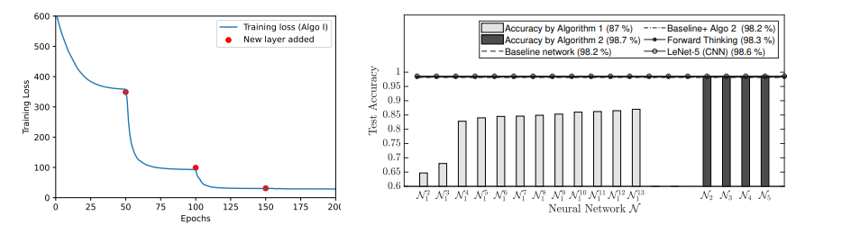
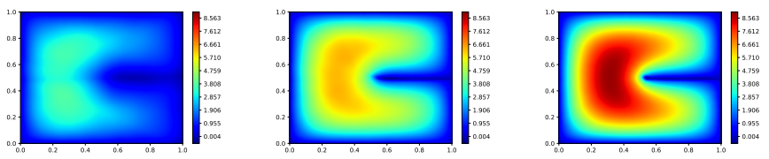
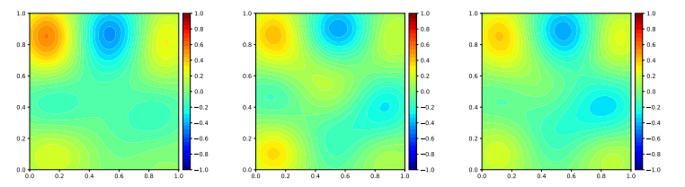

Layerwise Sparsifying Training and Sequential Learning Strategy for Neural Architecture Adaptation
It has been observed that deep neural networks (DNN) create increasingly
simpler but more useful representations of the learning problem layer by layer. Furthermore, empirical
evidence supports the paradigm that depth of a network is of crucial
importance. Such large networks, however, yield
computationally complex optimization problems. Furthermore, despite
such successes, the mechanisms behind deep learning remain a mystery
and a trial-and-error approach (Architecture search) is often employed to retrieve the best
neural network. Thus, there is a need for
adaptive principles to guide the architecture design of a neural network.

Figure 1: Schematic of layerwise training Algorithm.
One of the most promising directions is perhaps the layerwise training of neural
networks (Algorithm I). In this project, the layers of a resnet architecture is trained one at a time, and once they are trained, the input data is mapped forward through the layer to create a new learning problem. This is then
followed by a sparse training
of the enriched NN with L1-regularization only on the weights
and biases of the newly added hidden layer. In order to promote learning in subsequent layers and to allow for effective information transfer, we use a manifold regularization term which is based on the similarity in the input data set. Further, we also incorporate a physics informed regularizer for each layer in an attempt to create interpretable hidden layers in a deep neural network. However, the layer-wise training strategy suffers from the training saturation problem where the loss does not decrease after adding a few layers. In order to overcome this issue, a sequential learning strategy (Algorithm 2) is employed
where a sequence of small networks is trained to learn the residual produced by Algorithm 1.
### Significant Results
We have additionally demonstrated the approach on a wide variety of problems in scientific machine learning (goverened by PDE's) such as:
* Image classification problem.
* Physics informed adaptive neural network (PIANN): A framework for adaptively solving PDE's.
* Physics reinforced adaptive neural network (PRANN): Combining sparse noisy measurement data with incomplete/approximate physics.
* Adaptive learning for inverse problems.
Further, we have also compared our proposed approach with other state of the art layerwise training methods. Figure 2 shows such a comparison for the clasification task and also shows a layerwise training curve for a regression task.

Figure 2: a) Layerwise training curve on a regression task where the ridge indicates the point where we add a new layer; b) Summary of results for MNIST classification task.
Figure 3 below shows the results (evolution of solution with layer addition) for PIANN for learing a PDE with complex geometry.

Figure 3: Physics informed adaptive neural network for progressively learning the Poisson's equation with a slit in the domain.
We have also demonstrated that our proposed approach serves as a natural candidate for recovering stable inverse maps from sparse data. Inverse problems are usually ill-posed and involves learning the map from low-dimensional space (observation space) to a high dimensional space (parameter space). By exploring the relationship between manifold regularization and stability, we could enforce stability (well-posedness) while adding new layers. Figure 4 below shows a comparison between different methods for learning inverse maps.

Figure 4: Predicted parameter field for a particular test observation sample using different methods: a) Solution obtained by equivalent baseline network; b) True solution; c) Solution
obtained by Proposed method.